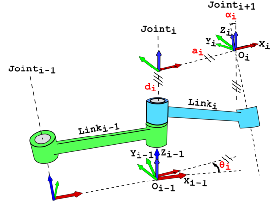
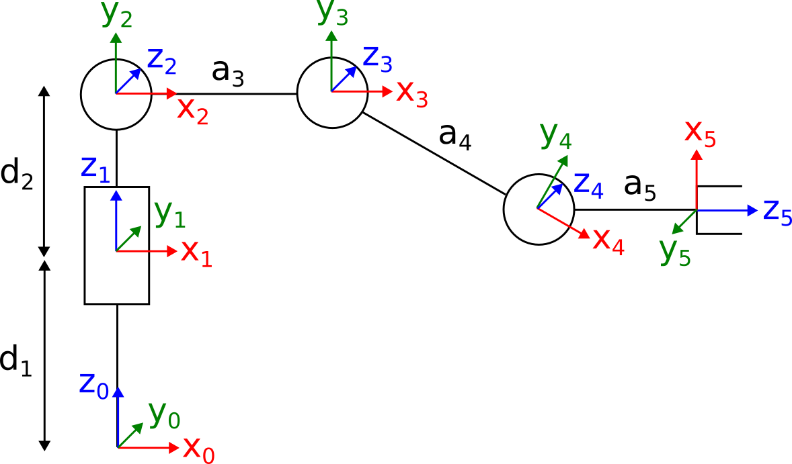
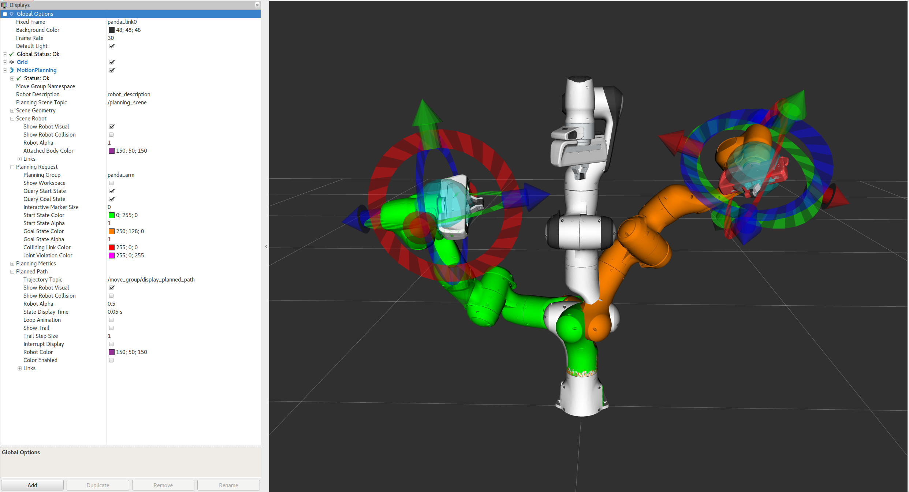
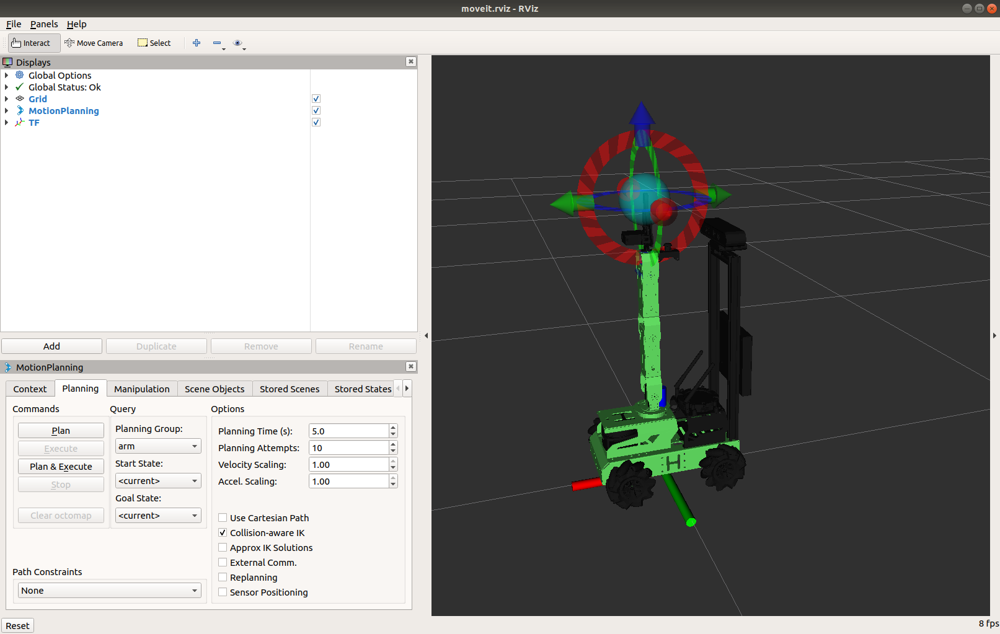
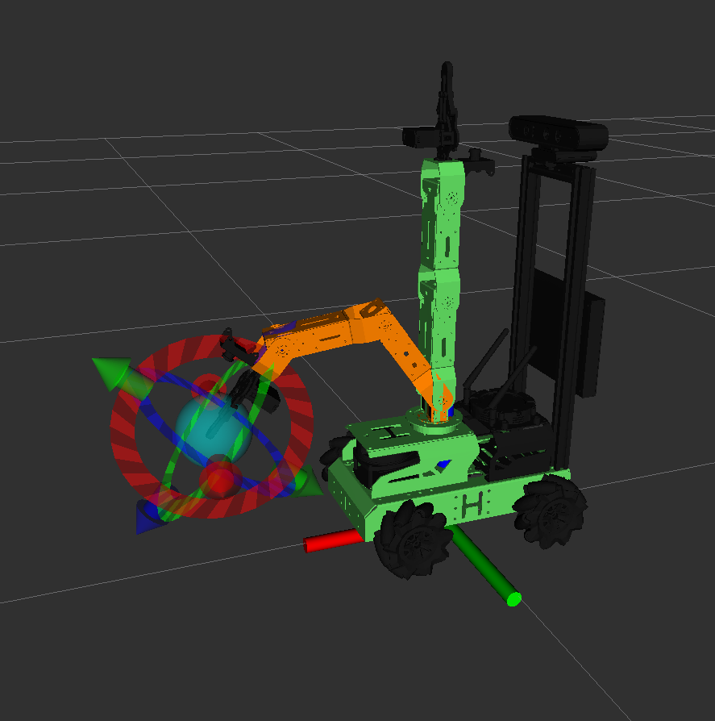
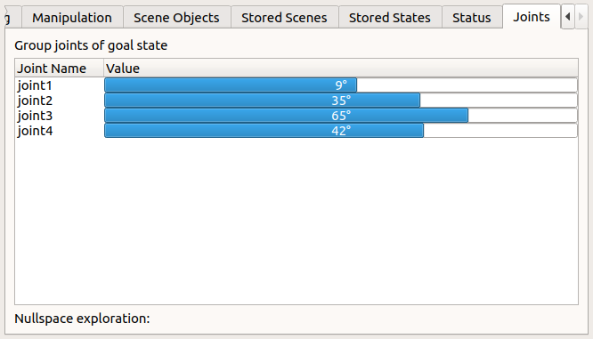
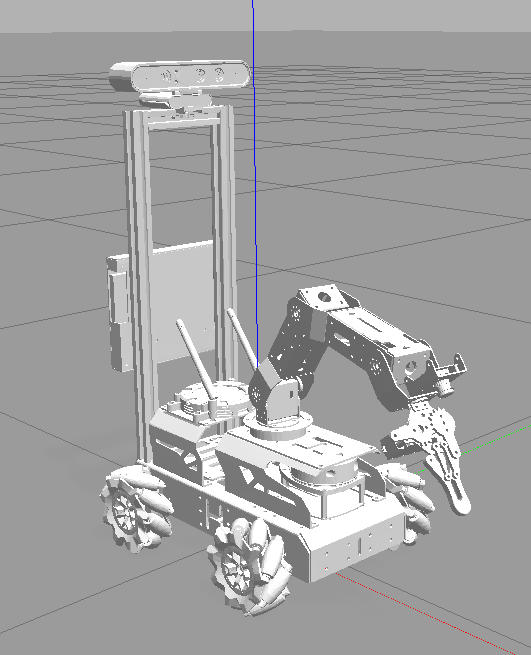
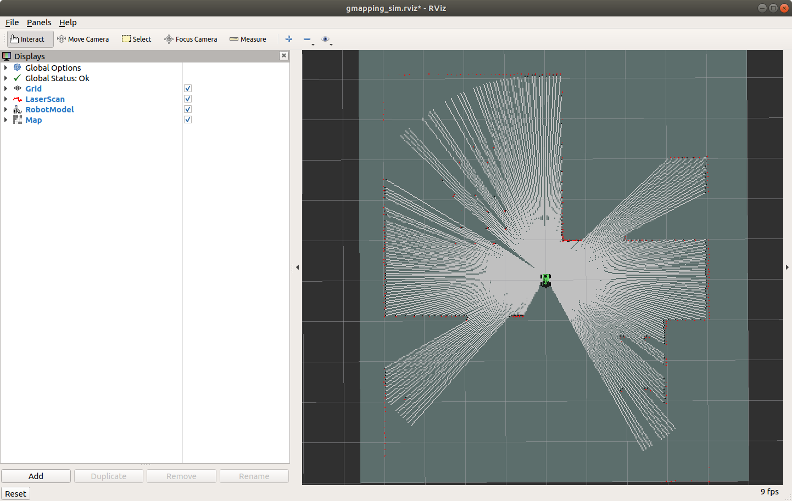

Lab 5: Robotic Arm and SLAM
Seneca Polytechnic SEA700 Robotics for Software Engineers
Forward Kinematics
As discussed in lecture, the forward kinematics problem involves finding the configuration of a specified link in a robotic manipulator relative to some other reference frame, given the angles of each of the joints in the manipulator.
Denavit–Hartenberg (DH) Parameters
In mechanical engineering, the Denavit–Hartenberg parameters (also called DH parameters) are the four parameters associated with a particular convention for attaching reference frames to the links of a spatial kinematic chain, or robot manipulator. In this convention, coordinate frames are attached to the joints between two links such that one transformation is associated with the joint \([Z]\), and the second is associated with the link \([X]\). The coordinate transformations along a serial robot consisting of n links form the kinematics equations of the robot:
where \([T]\) is the transformation that characterizes the location and orientation of the end-link.

Figure 5.1 DH Kinematics Links
As shown in the figure above, each joint (i-1, i, and i+1) has a unique line \(S\) (shown as a dotted line in the figure above) in space that forms the joint axis and defines the relative movement of its two links. For each sequence of lines \(S_i\) and \(S_{i+1}\), there is a common normal line \(A_{i, i+1}\).
By convention:
- \(z\)-direction - is in the joint axis \(S\) direction. \(z_i\) describes the joint attached to the end of \(\textrm{Link}_i\) (i.e., the next joint).
- \(x\)-direction - is the common normal \(A\). \(x_i = z_{i} \times z_{i-1}\) is the common normal \(A_{i, i+1}\). If there is no unique common normal, \(d_i\) below becomes a free parameter and can be defined by joint configuration. Also, the \(x_i\) axis must intersect both the \(z_{i-1}\) and \(z_i\) axes.
- \(y\)-direction - is the third direction using the right-hand rule.
- the origin of joint i is at the intersection of \(x_i\) and \(z_i\).
Four Parameters
The following four transformation parameters (labeled in red text in the figure above) are known as the DH parameters:
Descriptions of the Joint
- \(d_i\): sliding / offset along the joint axis \(S_i\) (\(z_{i-1}\)) from the old common normal \(A_{i-1, i}\) (\(x_{x-1}\)) to the common normal \(A_{i, i+1}\) (\(x_i\))
- \(\theta_i\): rotation about joint axis \(S_i\) (\(z_{i-1}\)) from the old common normal \(A_{i-1, i}\) (\(x_{x-1}\)) to the common normal \(A_{i, i+1}\) (\(x_i\))
Physical Dimensions of the Link
- \(a_i\) (or \(r_i\)): arm length / length along the common normal \(A_{i, i+1}\) (\(x_i\)) from the joint axis \(S_i\) (\(z_{i-1}\)) to the next joint axis \(S_{i+1}\) (\(z_i\)) at the end of \(\textrm{Link}_i\)
- \(\alpha_i\): rotation about the common normal \(A_{i, i+1}\) (\(x_i\)) from the joint axis \(S_i\) (\(z_{i-1}\)) to the next joint axis \(S_{i+1}\) (\(z_i\)) at the end of \(\textrm{Link}_i\)
This convention allows the definition of the movement of links around a common joint axis \(S_i\) by the screw displacement:
Each of these parameters could be a constant depending on the structure of the robot. Under this convention, the dimensions of each link in the serial chain are defined by the screw displacement around the common normal \(A_{i, i+1}\) from joint \(S_i\) to \(S_{i+1}\), which is given by:
where \(\alpha_{i, i+1}\) and \(a_{i, i+1}\) define the physical dimensions of the link in terms of the angle measured around and distance measured along the x-axis.
JetAuto Arm Forward Kinematics

Figure 5.2 JetAuto Arm Links
The figure above shows the kinematic link diagram of the JetAuto arm. Let's create the DH parameters table for the first two links:
First, let's define the joints:
- Joint-1 is the rotation platform of the robotic arm. We'll define \(z_1\) along the joint axis. For convenience, we'll define \(z_1\) as upward, \(x_1\) as right, then \(y_1\) must point into the page due to the right-hand rule.
- Joint-0 is the base of the robot and will be used as the global reference. We'll define it in the same direction as Joint-1 for convenience. Consideration of Joint-0 is only necessary in this case because there's an offset between the base platform and Joint-1. Normally, Joint-1 can be used as the global reference.
- Joint-2 is the rotation servo of the first segment of the robotic arm. We can define the joint axis \(z_2\) as into the page. Taking the cross product of \(x_2 = z_{2} \times z_{1}\) yields an \(x_2\) that is to the right. Therefore, \(y_1\) is upward due to the right-hand rule.
- Joint-3 is the rotation servo of the second segment of the robotic arm. We can define the joint axis \(z_3\) as into the page to stay consistent with Joint-2. Since \(z_2\) and \(z_3\) are parallel, \(x_3\) will need to intersect \(z_2\) and \(z_3\) and point to the right. Therefore, \(y_1\) is upward due to the right-hand rule.
- Joint-4 and Joint-5 can be defined in a similar manner as above.
Now, we can define the links and find the DH parameters:
- Link-1 is from the base platform to the rotation platform Joint-1; this link is just an offset of \(d_1\) along the \(z_0\) direction.
- Link-2 is from the rotation platform to the rotation servo of the robotic arm. There's a distance of \(d_2\) along the \(z_1\) direction, and the joint will have \(\theta_2\) rotation about \(z_1\). There is no offset in the \(x_2\) direction, and from the \(z_1\) direction to the \(z_2\) direction, there's a rotation of \(\alpha_2 = -90°\).
- Link-3 is from the first rotation servo to the second rotation servo of the robotic arm. There is no offset in the \(z_2\) direction, and the joint will have \(\theta_3\) rotation about \(z_2\). There is an offset of \(a_3\) in the \(x_3\) direction between \(z_2\) to \(z_3\), and there is no rotation between the \(z_2\) direction and the \(z_3\) direction.
- Link-4 and Link-5 can be defined in a similar manner as above.
Putting this all together yields the following DH parameters table:
Table 5.1 JetAuto DH Parameters Table
| Link # | d | θ | a | α |
|---|---|---|---|---|
| 1 | \(d_1\) | 0 | 0 | 0 |
| 2 | \(d_2\) | \(\theta_2\) | 0 | -90° |
| 3 | 0 | \(\theta_3\) | \(a_3\) | 0 |
| 4 | ||||
| 5 |
Your task as part of the lab is to complete this table.
ROS MoveIt
ROS MoveIt is a powerful software framework designed for robot motion planning and manipulation within the Robot Operating System (ROS) ecosystem. It provides a robust set of tools and libraries that enable developers to implement complex motion planning algorithms, manage robot kinematics, and execute real-time motion tasks. With features such as collision detection, trajectory optimization, and support for various robotic platforms, MoveIt simplifies the process of programming robots to perform intricate movements. Its flexibility and extensibility make it a popular choice for both research and industrial applications, allowing users to create sophisticated robotic solutions tailored to specific needs.

Figure 5.3 ROS MoveIt
More details on MoveIt can be found here.
Simultaneous Localization and Mapping (SLAM)
Simultaneous localization and mapping (SLAM) is the computational problem of constructing or updating a map of an unknown environment while simultaneously keeping track of an agent's location within it. Popular approximate solution methods include the particle filter, extended Kalman filter, covariance intersection, and GraphSLAM. SLAM algorithms are based on concepts in computational geometry and computer vision, and are used in robot navigation, robotic mapping, and odometry for virtual reality or augmented reality.
SLAM algorithms are tailored to the available resources and are not aimed at perfection but at operational compliance. Published approaches are employed in self-driving cars, unmanned aerial vehicles, autonomous underwater vehicles, planetary rovers, newer domestic robots, and even inside the human body.
JetAuto Robot Arm Control
-
Before controlling JetAuto's robot arm, let's make sure we have all the necessary packages installed. We'll also install the GMapping package for the second part of this Lab. Open a terminal and run the following command:
sudo apt install ros-melodic-moveit ros-melodic-trac-ik-kinematics-plugin ros-melodic-slam-gmapping ros-melodic-map-server ros-melodic-amcl ros-melodic-move-base ros-melodic-global-planner -
First, we'll try simulating JetAuto's robot arm in ROS using MoveIt along with a Gazebo model. Open a terminal and run:
roslaunch jetauto_moveit_config demo_gazebo.launch fake_execution:=falseThis should load RViz and Gazebo windows. By providing
falseto thefake_executionargument, we'll be able to move the robot arm in the Gazebo model as well.
Figure 5.4 JetAuto MoveIt
The top-left Panel labeled "Displays" is the RViz Tool Bar, the bottom-left Panel labeled "MotionPlanning" is the MoveIt Tool Area, and the right Panel is the Simulation view. In the Simulation view, you can use your mouse (right-click, left-click, middle-click, and wheel) to adjust the view.
-
Select the "Planning" tab in MoveIt and ensure the "Planning Group" is "arm". Move the model in the Simulation view around to set the joint goal of the arm:
- The Blue ball controls the position of the end effector in 3D space.
- The Red Arrow controls the y-axis of the end effector.
- The Green Arrow controls the x-axis of the end effector.
- The Blue Arrow controls the z-axis of the end effector.
Remember, once the arm is moved, the axes refer to the end effector's frame of reference.

Figure 5.5 JetAuto MoveIt Planning
When you set the goal for the robot arm, MoveIt performs inverse kinematics (IK) to determine the configuration for each joint to reach the goal. When calculating the IK, collisions with other parts of the robot are already taken into consideration. If there are any anticipated collisions, they are indicated in red.
-
You can also perform forward kinematics by scrolling over to the "Joints" tab in MoveIt to view and adjust the goal rotation angle of each joint.

Figure 5.6 JetAuto MoveIt Planning Joints
-
Once you are ready with the position for the arm to move to, go back to the "Planning" tab and click "Plan & Execute". You should see the model move from the current state to the goal state. The Gazebo model should move as well.

Figure 5.7 JetAuto MoveIt Planning Gazebo View
-
(Optional) If you want, you can go through the demo videos and lessons provided by the manufacturer to gain a better understanding of the robot arm.
JetAuto & JetAuto Pro Resources
- Chapter 15.1 All Lessons
- Chapter 15.2
- Lesson 2 - Demo Video
- Lesson 3 - Demo Video
- Lesson 4
- Lesson 5 - Demo Video
- Lesson 6 - Demo Video
- Lesson 7 - Demo Video
- Lesson 8 - Demo Video
MoveIt Python Interface
-
Next, let's use a Python interface to work with MoveIt. Build a new ROS package in your
ros_wsworkspace and put the following script into your package and call it move_group_python_interface_tutorial.py.This script is from the MoveIt Tutorial using the Panda robot but changed to work with the JetAuto robot.
#!/usr/bin/env python import sys import copy import rospy import moveit_commander import moveit_msgs.msg import geometry_msgs.msg from math import pi from std_msgs.msg import String from moveit_commander.conversions import pose_to_list ## END_SUB_TUTORIAL def all_close(goal, actual, tolerance): """ Convenience method for testing if a list of values are within a tolerance of their counterparts in another list @param: goal A list of floats, a Pose or a PoseStamped @param: actual A list of floats, a Pose or a PoseStamped @param: tolerance A float @returns: bool """ all_equal = True if type(goal) is list: for index in range(len(goal)): if abs(actual[index] - goal[index]) > tolerance: return False elif type(goal) is geometry_msgs.msg.PoseStamped: return all_close(goal.pose, actual.pose, tolerance) elif type(goal) is geometry_msgs.msg.Pose: return all_close(pose_to_list(goal), pose_to_list(actual), tolerance) return True class MoveGroupPythonIntefaceTutorial(object): """MoveGroupPythonIntefaceTutorial""" def __init__(self): super(MoveGroupPythonIntefaceTutorial, self).__init__() ## BEGIN_SUB_TUTORIAL setup ## ## First initialize `moveit_commander`_ and a `rospy`_ node: moveit_commander.roscpp_initialize(sys.argv) rospy.init_node('move_group_python_interface_tutorial', anonymous=True) ## Instantiate a `RobotCommander`_ object. Provides information such as the robot's ## kinematic model and the robot's current joint states robot = moveit_commander.RobotCommander() ## Instantiate a `PlanningSceneInterface`_ object. This provides a remote interface ## for getting, setting, and updating the robot's internal understanding of the ## surrounding world: scene = moveit_commander.PlanningSceneInterface() ## Instantiate a `MoveGroupCommander`_ object. This object is an interface ## to a planning group (group of joints). In this tutorial the group is the primary ## arm joints in the Panda robot, so we set the group's name to "panda_arm". ## If you are using a different robot, change this value to the name of your robot ## arm planning group. ## This interface can be used to plan and execute motions: ##group_name = "panda_arm" group_name = "arm" move_group = moveit_commander.MoveGroupCommander(group_name) ## Create a `DisplayTrajectory`_ ROS publisher which is used to display ## trajectories in Rviz: display_trajectory_publisher = rospy.Publisher('/move_group/display_planned_path', moveit_msgs.msg.DisplayTrajectory, queue_size=20) ## END_SUB_TUTORIAL ## BEGIN_SUB_TUTORIAL basic_info ## ## Getting Basic Information ## ^^^^^^^^^^^^^^^^^^^^^^^^^ # We can get the name of the reference frame for this robot: planning_frame = move_group.get_planning_frame() print "============ Planning frame: %s" % planning_frame # We can also print the name of the end-effector link for this group: eef_link = move_group.get_end_effector_link() print "============ End effector link: %s" % eef_link # We can get a list of all the groups in the robot: group_names = robot.get_group_names() print "============ Available Planning Groups:", robot.get_group_names() # Sometimes for debugging it is useful to print the entire state of the # robot: print "============ Printing robot state" print robot.get_current_state() print "" ## END_SUB_TUTORIAL # Misc variables self.box_name = '' self.robot = robot self.scene = scene self.move_group = move_group self.display_trajectory_publisher = display_trajectory_publisher self.planning_frame = planning_frame self.eef_link = eef_link self.group_names = group_names def go_to_joint_state(self): # Copy class variables to local variables to make the web tutorials more clear. # In practice, you should use the class variables directly unless you have a good # reason not to. move_group = self.move_group ## BEGIN_SUB_TUTORIAL plan_to_joint_state ## ## Planning to a Joint Goal ## ^^^^^^^^^^^^^^^^^^^^^^^^ ## The Panda's zero configuration is at a `singularity <https://www.quora.com/Robotics-What-is-meant-by-kinematic-singularity>`_ so the first ## thing we want to do is move it to a slightly better configuration. # We can get the joint values from the group and adjust some of the values: joint_goal = move_group.get_current_joint_values() joint_goal[0] = pi/4 joint_goal[1] = pi/4 joint_goal[2] = pi/4 joint_goal[3] = pi/4 # The go command can be called with joint values, poses, or without any # parameters if you have already set the pose or joint target for the group move_group.go(joint_goal, wait=True) # Calling ``stop()`` ensures that there is no residual movement move_group.stop() ## END_SUB_TUTORIAL # For testing: current_joints = move_group.get_current_joint_values() return all_close(joint_goal, current_joints, 0.01) def main(): try: print "" print "----------------------------------------------------------" print "Welcome to the MoveIt MoveGroup Python Interface Tutorial" print "----------------------------------------------------------" print "Press Ctrl-D to exit at any time" print "" print "============ Press `Enter` to begin the tutorial by setting up the moveit_commander ..." raw_input() tutorial = MoveGroupPythonIntefaceTutorial() print "============ Press `Enter` to execute a movement using a joint state goal ..." raw_input() tutorial.go_to_joint_state() print "============ Python tutorial demo complete!" except rospy.ROSInterruptException: return except KeyboardInterrupt: return if __name__ == '__main__': main()To use the Python MoveIt interfaces, we will import the
moveit_commandernamespace. This namespace provides us with aMoveGroupCommanderclass, aPlanningSceneInterfaceclass, and aRobotCommanderclass. More on these below. We also importrospyand some messages that we will use:import sys import copy import rospy import moveit_commander import moveit_msgs.msg import geometry_msgs.msg from math import pi from std_msgs.msg import String from moveit_commander.conversions import pose_to_listFirst, initialize
moveit_commanderand arospynode:moveit_commander.roscpp_initialize(sys.argv) rospy.init_node('move_group_python_interface_tutorial', anonymous=True)Instantiate a
RobotCommanderobject. This object provides information such as the robot’s kinematic model and its current joint states.robot = moveit_commander.RobotCommander()Instantiate a
PlanningSceneInterfaceobject. This provides a remote interface for getting, setting, and updating the robot’s internal understanding of the surrounding world:scene = moveit_commander.PlanningSceneInterface()Instantiate a
MoveGroupCommanderobject. This object is an interface to a planning group (a group of joints). In this tutorial, the group is the primary arm joints in the JetAuto robot, so we set the group’s name toarm. If you are using a different robot, change this value to the name of your robot arm planning group. This interface can be used to plan and execute motions:group_name = "arm" move_group = moveit_commander.MoveGroupCommander(group_name)Create a
DisplayTrajectoryROS publisher, which is used to display trajectories in RViz:display_trajectory_publisher = rospy.Publisher('/move_group/display_planned_path', moveit_msgs.msg.DisplayTrajectory, queue_size=20)Getting Basic Information:
# We can get the name of the reference frame for this robot: planning_frame = move_group.get_planning_frame() print "============ Planning frame: %s" % planning_frame # We can also print the name of the end-effector link for this group: eef_link = move_group.get_end_effector_link() print "============ End effector link: %s" % eef_link # We can get a list of all the groups in the robot: group_names = robot.get_group_names() print "============ Available Planning Groups:", robot.get_group_names() # Sometimes for debugging, it is useful to print the entire state of the # robot: print "============ Printing robot state" print robot.get_current_state() print ""Planning to a Joint Goal:
# We can get the joint values from the group and adjust some of the values: joint_goal = move_group.get_current_joint_values() joint_goal[0] = pi/4 joint_goal[1] = pi/4 joint_goal[2] = pi/4 joint_goal[3] = pi/4 # The go command can be called with joint values, poses, or without any # parameters if you have already set the pose or joint target for the group move_group.go(joint_goal, wait=True) # Calling ``stop()`` ensures that there is no residual movement move_group.stop() -
Make sure you have made the file executable using
chmod +x. -
Build the package and run the script. You should see the robot arm in RViz and Gazebo move to the new configuration you defined.
-
Lastly, let's try everything out on the physical robot. Copy your workspace to the JetAuto, then SSH into the JetAuto.
-
Stop the APP service on the robot:
sudo systemctl stop start_app_node.service
-
Next, start MoveIt on the JetAuto. This time, we won't be using the Gazebo simulation:
roslaunch jetauto_moveit_config demo.launch fake_execution:=false -
You can now move the robot arm using the MoveIt interface as well as the script in your package.
JetAuto Robot Arm Control (Without MoveIt)
-
Although MoveIt is a good tool for simulating and moving the robot arm, you can also control the robot arm without using MoveIt. Create another Python script in your package with the following:
#!/usr/bin/env python3 import rospy import signal from hiwonder_servo_msgs.msg import MultiRawIdPosDur from hiwonder_servo_controllers.bus_servo_control import set_servos from kinematics.search_kinematics_solutions import SearchKinematicsSolutions class MoveServoNode: def __init__(self, name): rospy.init_node(name, anonymous=True) self.z_dis = 0.4 self.y_init = 0.15 signal.signal(signal.SIGINT, self.shutdown) self.joints_pub = rospy.Publisher('servo_controllers/port_id_1/multi_id_pos_dur', MultiRawIdPosDur, queue_size=1) rospy.sleep(0.2) self.search_kinematics_solutions = SearchKinematicsSolutions() while not rospy.is_shutdown(): try: if rospy.get_param('/hiwonder_servo_manager/running') and rospy.get_param('/joint_states_publisher/running'): break except: rospy.sleep(0.1) self.move_servo() def shutdown(self, signum, frame): rospy.loginfo('shutdown') def move_servo(self): if self.z_dis > 0.43: self.z_dis = 0.43 if self.z_dis < 0.33: self.z_dis = 0.33 res = self.search_kinematics_solutions.solveIK((0, self.y_init, self.z_dis), 0, -90, 90) if res: joint_data = res[1] rospy.sleep(0.5) set_servos(self.joints_pub, 1500, ((1, 500), (2, joint_data['joint4']), (3, joint_data['joint3']), (4, joint_data['joint2']), (5, joint_data['joint1']))) rospy.sleep(1.8) rospy.signal_shutdown('shutdown') if __name__ == '__main__': MoveServoNode('move_servo') -
The above code is extracted from example code found in:
~/jetauto_ws/src/jetauto_example/scripts/
It allows you to control the position of the robot arm end effector through inverse kinematics. Controlling the arm's servo directly is NOT recommended as you'll need to manually define collision limits.
Run the script, and the robot arm should move to the given position in the first three terms of the inverse kinematics solver function
(0, self.y_init, self.z_dis).
JetAuto SLAM (Simulation)
-
Open a terminal on your computer (not the robot) and run the following:
roslaunch jetauto_gazebo room_worlds.launchThis will open up a JetAuto model in a room populated with furniture.

Figure 5.8 Gazebo Room
-
Press the "Play" button at the bottom of the Gazebo simulator.
-
Start the SLAM node. Open a new terminal and start:
roslaunch jetauto_slam slam.launch sim:=trueYou can ignore the "No module named 'smbus2'" error because we don't have a joystick connected.
-
Start RViz to visualize the map. Open a new terminal and start:
roslaunch jetauto_slam rviz_slam.launch sim:=trueIf RViz does not load with the proper config, go to File > Open Config and open the following config file:
~/jetauto_ws/src/jetauto_slam/rviz/without_namespace/gmapping_sim.rviz
You can close the default.rviz without saving.

Figure 5.8 Gazebo Room Mapping
-
Start the keyboard controller and move the robot around to map the entire room.
-
Once you are satisfied, open a new terminal and navigate to the slam map directory:
roscd jetauto_slam/maps -
We'll save the map as
map_01:rosrun map_server map_saver -f map_01 map:=/mapYou should see something similar to this output from the terminal:
[ INFO] [1729620059.595167203]: Waiting for the map [ INFO] [1729620060.388306846]: Received a 1248 X 384 map @ 0.025 m/pix [ INFO] [1729620060.388618676]: Writing map occupancy data to map_01.pgm [ INFO] [1729620060.400554480, 1407.036000000]: Writing map occupancy data to map_01.yaml [ INFO] [1729620060.400909179, 1407.036000000]: DoneYour map has now been saved.
-
Close the SLAM and RViz terminals. You can keep the Gazebo room open.
-
With the map saved, we'll now use it for navigation. Open a new terminal and run:
roslaunch jetauto_navigation navigation.launch sim:=true map:=map_01
- There's an error with the navigation code in simulation that still needs to be solved. We will need to perform the SLAM step using a physical robot for now.
- Open a new terminal and run:
roslaunch jetauto_navigation rviz_navigation.launch sim:=true
- There's an error with the navigation code in simulation that still needs to be solved. We will need to perform the SLAM step using a physical robot for now.
JetAuto SLAM (Physical Robot)
-
Let's try everything out on the physical robot. Connect to the JetAuto using NoMachine or any remote desktop software and stop the APP service on the robot:
sudo systemctl stop start_app_node.service -
Start the SLAM node and use
gmappingas the mapping method:roslaunch jetauto_slam slam.launch slam_methods:=gmapping -
Open a new terminal and start RViz to visualize the map:
roslaunch jetauto_slam rviz_slam.launch slam_methods:=gmapping -
Open a new terminal and start the keyboard controller and move the robot around to map the entire room.
-
Once you are satisfied, open a new terminal and navigate to the slam map directory:
roscd jetauto_slam/maps -
We'll save the map as
map_01:rosrun map_server map_saver -f map_01 map:=/jetauto_1/mapYou should see something similar to this output from the terminal:
[ INFO] [1729620059.595167203]: Waiting for the map [ INFO] [1729620060.388306846]: Received a 1248 X 384 map @ 0.025 m/pix [ INFO] [1729620060.388618676]: Writing map occupancy data to map_01.pgm [ INFO] [1729620060.400554480, 1407.036000000]: Writing map occupancy data to map_01.yaml [ INFO] [1729620060.400909179, 1407.036000000]: DoneYour map has now been saved.
-
Close the SLAM and RViz terminals.
-
With the map saved, we'll now use it for navigation. Open a new terminal and run:
roslaunch jetauto_navigation navigation.launch map:=map_01 -
Open a new terminal and run:
roslaunch jetauto_navigation rviz_navigation.launchNow you can use the 2D Pose Estimate, 2D Nav Goal, and Publish Point to help you navigate.
- 2D Pose Estimate is used to set the initial position of JetAuto.
- 2D Nav Goal is used to set a target point.
- Publish Point is used to set multiple target points.
Lab Questions
-
Find the approximate Cartesian coordinate of the end effector (tip of the gripper) of the JetAuto if:
- \(\theta_1 = 45^\circ\)
- \(\theta_2 = -30^\circ\)
- \(\theta_3 = 85^\circ\)
- \(\theta_4 = 25^\circ\)
You'll need to measure the dimensions of each link and construct the forward kinematics using DH parameters. You can perform the calculation by hand or using software (such as Python). You are not allowed to just read the position from ROS, but you can find the length of each link in MoveIt.
-
Write a program that will move the robot arm to the position in question 1.
-
Use SLAM to create and save a map of the classroom. Afterward, demonstrate navigating from one corner of the class to another.
References
- Denavit–Hartenberg parameters
- ROS Tutorials
- EECS 106A Labs